Folio IX · The archive stops grading history and starts generating data. Governance law: no human-subject entry proceeds past stimulus construction until the S1 statistics gate resolves (portfolio G1/G5).
Seed 20250922 · Sixteen entries · Nulls displayed, not buried
Folio IX · The Working Laboratory
The previous eight folios graded claims about the past. This one runs experiments. Its subject is a family of public repositories by occult-kranti — open-sync (an evidence-graded neural-audio laboratory whose “Quick Lab” engine runs blinded n-of-1 self-experiments), its predecessor brainwave_opensync, the crop-circle-pattern-lab (sixty formations and a cymatics decoder that turns geometry into frequencies), and astrology-sim-ant — audited end to end by an expert panel: an advisor, a researcher, a coder, and a designer, across five rounds.
The panel’s verdict became the lab’s architecture. The instruments were built before the verdicts: six simulations — simulations as calibrated instruments — decide what the human experiments are even allowed to ask. Every number on this page is quoted from a committed result JSON; every verdict string, including the nulls, was emitted by code.
Sixteen entries in three tiers: Tier S, the statistical spine, pure compute; Tier A, seven gated human experiments waiting at stimulus construction; Tier B, instruments and raters. And one gallery where the lab’s decipherment of Newton’s bench chemistry hangs on the wall — equations balanced, provenance stated.
The Panel in Five Lines
Round 1 — the Advisor’s review of portfolio v1: the S1 pass gate is internally inconsistent; blinding is “software politeness”; no multiple-comparison policy exists. record →
Round 2 — the Researcher runs the harness instead of arguing: power at d = 0.35 and minSessions = 10 is 6.8%; the gate fails by construction; remediation tree R0–R3 preregistered. record →
Round 3 — the simulation spec audited: nine binding amendments, among them the block-preserving permutation and ≥1,000 surrogates. record →
Round 4 — the design audited: eight amendments; no unbalanced equation and no unprovenanced numeral ships. record →
Round 5 — ratified, conditional on a final audit that reruns every artifact from seed before any claim ships. record →
The consensus statement, verbatim from the roadmap: gates computed before data, nulls published beside positives, grades migrated when the instrument is corrected.
The Panel Record · Rounds I–V
What each round settled
Round 1 — The Advisor’s Review
The strongest entries stood: S2 (the ERP-superposition forward model, “load-bearing — no EEG dollar until it exists”), S1 (the power audit), A3 (the Chladni demonstration). The collapse was structural: S1’s pass criterion demanded Type-I ≤ 5.5% and ≥ 80% power at d = 0.35 with ten sessions — arithmetically impossible, “a gate the pipeline is guaranteed to fail.” Blinding by sealed software key was judged one DevTools click from unblinding; guess-the-arm checks existed nowhere; and the portfolio ran ~13 hypotheses with no familywise or FDR policy above the single-test level.
Round 2 — The Harness Runs
The Researcher conceded with computed numbers: at minSessions = 10, power at d = 0.35 is 6.8%; sixty sessions reaches only ~23%; 80% power needs ≈128 sessions/arm at d = 0.35 (≈63/arm at d = 0.5). The Advisor’s independent reproduction — ideal-Gaussian Welch power ~11% at n = 10 — bracketed the harness figure from above, the gap attributable to Likert-7 discretization and carryover attenuation. The remediation tree was preregistered: R0 run the grid, R1 exact permutation (“validity repair, not power repair”), R2 raise minSessions, R3 widen the SESOI or demote. Every historical Quick Lab “signal” verdict migrates to “unaudited” until recomputed. One flag stayed open: the repo’s own critique R2 claimed 65.6% false positives at ρ = 0.95 — reproducing it exactly became a preregistered S1 sub-task, not an assumption.
Round 3 — Nine Binding Amendments to the Sim Suite
SIM-1: closed-form power checked at both d = 0.35 and d = 0.5; both Type-I anchors printed (the Advisor’s .62 ± .03 primary, R2’s 65.6% secondary — adjudicated, never quietly re-aimed); a live bridge to the real engine.ts mandatory at 0/2000 disagreements before any gate cell is written. SIM-2: day-label permutation is not exchangeable under across-day AR(1) — only block-preserving permutation carries the acceptance criterion. SIM-3: surrogate count raised from 200 to ≥ 1,000, false-escape rate printed as an acceptance criterion. SIM-4: P(undecided at the 140-night cap) printed as a headline metric. SIM-5: the IoU criterion replaced by a pre-registered band-coverage metric, frozen before any run. SIM-6: the {3¢, 10¢} windows labeled non-inferential; only the 5¢/JI-13 cell carries a verdict. Cross-sim: bit-identity scoped to pinned versions on one machine.
Round 4 — Eight Amendments to the Design
The chemistry on the wall must balance: the star-regulus equation corrected to Sb₂S₃ + 3 Fe → 2 Sb + 3 FeS; the saltpeter side-reaction corrected to 2 KNO₃ + 2 S → K₂SO₄ + SO₂ + N₂; gold-in-mercury solubility fixed to ~0.1 at.% — the supersaturation that explains Newton’s dendrites; the Green Lion re-labeled a menstruum-family emblem, grade Speculative, referent uncertified; Newton’s amalgam tree separated from Arbor Dianae; Citrinitas made genuinely yellow (Fe₂O₃·nH₂O, or orpiment with an arsenic note). Every numeral burned into a render — 432 Hz, 90.0 dB SPL, 677 Hz — traces to a committed JSON or a named portfolio line before generation. Plates continue the site’s numbering at XVII.
Round 5 — Ratification
All seventeen amendments verified present and carried into acceptance gates. Verdict: RATIFIED. The ratification carries teeth: a final audit protocol that reruns every committed JSON seed-identically from a clean checkout, diffs regenerated golden fixtures against the pinned engine commit, walks every acceptance criterion to its file, probes the schema with a sabotaged result, and checks that the honesty strings — “indistinguishable,” “chance-consistent,” “under-powered” — are machine-emitted, never editorial. What the instruments then found is on this page: the 6.8% power collapse (Round 2, harness), the blocked-mapping Type-I reproduction at 0.608 (SIM-1), the permutation repair and its boundary (SIM-2), the amplitude-matching disclosure (SIM-3), and the crop-circle difference-tone table judged chance-consistent at p = 0.8371 (SIM-6).
Part 0
The Gate
Statistics first, stimuli second— no human-subject entry (A1, A2, A4, A5, A6, B3, B4) proceeds past stimulus construction until the S1 gate resolves to a passing branch. Portfolio law G1/G5.
The S1 statistics audit, for lay readers
Every human experiment in this laboratory would run on one instrument: the Quick Lab engine inside the open-sync repository — the code that decides, after two blinded weeks of self-experiment, whether the tonic did anything. Before the lab trusts that instrument with a single subject, S1 feeds it synthetic data with known truth and counts how often it cries “signal” on pure noise (a false-positive, or Type-I, rate) and how often it misses a real, moderate effect (power). Twenty thousand replications per cell; three hundred sixty cells; the real engine code path, checked against a bit-exact port through a live bridge.
The verdict has two halves. Half one: the instrument is fine when sessions interleave. Under the crossover mapping — arm A one day, arm B the next — the false-positive rate sits at ≈ .05 at every autocorrelation tested, exactly where a 5% test should sit. Half two: the instrument lies when sessions bunch into blocks. Real self-experimenters do not interleave; they do two weeks of A, then two weeks of B. When consecutive days are correlated (ρ = 0.95 — Monday predicts Tuesday), the blocked mapping inflates the false-positive rate to 0.608 ± 0.003: on pure noise, the engine reports “signal” three times out of five. That reproduces the Advisor’s independent anchor (.62 ± .03) and adjudicates the repo’s own critique R2 — whose 65.6% is excluded at the acceptance window’s edge, printed, and argued with in the open rather than quietly re-aimed at. This is the blocked-pseudoreplication failure: correlated days are not independent coin flips, and counting them as if they were manufactures certainty out of weather.
And the power half, the finding that organized Round 2: detecting a moderate effect (d = 0.35) at the repo’s default enrollment of ten sessions per arm succeeds 6.8% of the time — a gate the pipeline was guaranteed to fail. Reaching 80% power at that effect size needs ≈128 sessions per arm; at a larger effect (d = 0.5), ≈64. The gate is therefore not a formality: it is the arithmetic that decides what the lab is allowed to ask of a human being.
The preregistered remediation tree
R0 — run: the harness grid above. Pass = Type-I ≤ 5.5% and ≥ 80% power at the entry’s SESOI. (Failed by construction at minSessions = 10; that failure is the finding.)
R1 — permutation repair: swap the Welch t for an exact permutation test over the enrolled-seed schedule. SIM-2 below shows the repair is real but bounded: it restores validity (Type-I ≤ .055 at ρ = 0.95) only when enough blocks exist to permute — ten or more block-pairs. Below that, the test cannot even express p ≤ .05 (two-sided, K pairs allow minimum p = 2/2K) and controls the error rate at zero by discreteness — vacuous, printed, and never counted as powerful. Validity repair, not power repair.
R2 — raise the n: minSessions moves to the smallest grid value reaching 80% power: ≈128 sessions/arm at d = 0.35, ≈63/arm at d = 0.5. Every historical Quick Lab “signal” verdict is re-labeled “unaudited” until recomputed under the corrected test and n.
R3 — widen or demote: where R2’s n is infeasible, the entry’s SESOI is widened pre-data to what feasible n supports, or the entry is demoted to descriptive/equivalence-only.
Governance references: the S1 harness and the R0–R3 tree are specified in the panel documents (portfolio §0/G1; sim_design §SIM-1/2); the docs tree is listed under Docs & Reproducibility.
The gate instruments
Instrument panels are baked at build time from the committed result JSONs — the page never hand-transcribes a number. Pass numerals are gold; a failure would be copper with a dotted border, a grade rather than an alarm.
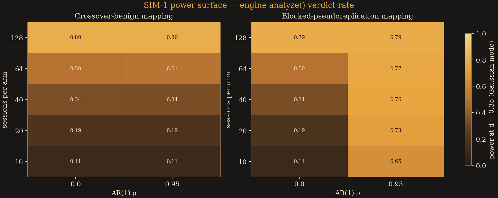
SIM-1 · Exhibit G-I — The Power Surface.Monte-Carlo power over the full grid (mappings × ρ × sessions × d), 20,000 replications per cell, seed 20250922. The crossover and blocked surfaces coincide at ρ = 0 and diverge under autocorrelation; 80% power at d = 0.35 arrives only at 128 sessions per arm.
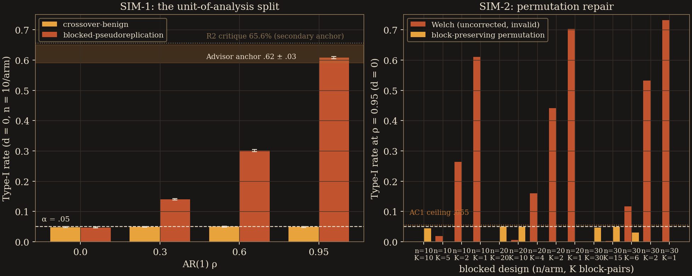
SIM-1/2 · Exhibit G-II — The Inflation and the Repair.Left: Type-I under the blocked mapping climbs with ρ to 0.608 ± 0.003 at ρ = 0.95 (Advisor anchor .62 ± .03 reproduced; critique R2’s 65.6% adjudicated at the window edge). Right: block-preserving permutation holds ≤ .055 where the design is non-vacuous.
sim1 · golden_fixtures · commit 0242561 · engine: live
S1-AC1a golden fixtures: port reproduces engine state/meanDiff/ci95 at rel 1e-9 on all fixtures — observed 0 disagreements / 37 fixtures; max ci95 rel err 1.46e-15, target 0 disagreementsPASSS1-AC1b engine block-2 schedule reproduced bit-exactly by mulberry32 port on every generated fixture — observed all exact, target exact integer matchPASSS1-ENG-DIAG engine-accuracy diagnostic printed (tCrit975 approximation vs scipy exact) — observed max_abs_tcrit_discrepancy=2.487836895572072, max_rel_tcrit_discrepancy=0.41349114158330774, df_at_max=1.5, target printed, not gatedPASS
The instrument says:“Golden fixtures: 37/37 fixtures reproduced by port at rel 1e-9 (max ci95 rel err 1.46e-15); engine tcrit975 approximation discrepancy vs exact: 4.13e-01 (df=2)”
sim1 · bridge_corners · commit 0242561 · engine: live
S1-AC1c live bridge: 0 disagreements on >= 4 corner cells (2000 reps each) before any G1 gate cell is written — observed 0 total disagreements, target 0/2000 per cellPASS
The instrument says:“Live bridge: 0 disagreements across 4 corner cells x 2000 reps through the real engine.ts analyze() — bridge PASSES; port tracks engine on MC data”
Corner cells, 2000 reps each: crossover ρ=0.0: engine 0.047 = port 0.047; crossover ρ=0.95: engine 0.0465 = port 0.0465; blocked ρ=0.0: engine 0.0595 = port 0.0595; blocked ρ=0.95: engine 0.634 = port 0.634.
S2-AC1 block-preserving permutation Type-I <= .055 at rho=0.95 blocked, n in {10,20,30}, all block lengths — observed max Type-I over non-vacuous cells = 0.0505 (n=20 L=1 K=20); 8 of 14 cells vacuous by discreteness (min attainable p > .05, Type-I 0 — printed, never counted as powerful); Welch uncorrected at n=10 K=1: 0.6105, target <= .055PASSS2-AC2 attainable-p-level distribution printed at n in {10,20,30} — observed see metrics.attainable_levels, target histogram committedPASSS2-AC3 power reported beside Welch's invalid uncorrected number with Delta-cost column — observed 56 rows, target table committedPASS
The instrument says:“Type-I inflated under blocked mapping: 0.611 +/- 0.005 (Welch, K=1 two-block, n=10) — REPAIRED by block-preserving permutation: 0.050 (K=10 pairs, n=20, rho=0.95; max over non-vacuous AC1 cells 0.051 <= .055: PASS). Vacuous cells (K<=5 pairs cannot reach p<=.05 two-sided: min attainable p = 2/2^K) printed, not counted as powerful.”
Five entries of pure compute, sequenced S1 → S5 → S2, non-deferrable because everything downstream inherits their grades. They cost nothing but electricity and answer only to their committed JSONs.
S1
The Monte-Carlo Power Audit
Infrastructure$0 compute · 360 cells
Convincing power: yes — internal; every downstream verdict inherits its grade
The gate itself, run. S1 audits the Quick Lab analysis engine against synthetic ordinal, autocorrelated, carryover-contaminated data whose truth is known, through the real engine.ts code path — golden fixtures pinned at relative 1e-9, a live bridge at 0/2000 disagreements on four corner cells before any gate cell was written. Its instruments hang in Part 0: Type-I ≈ .05 under the crossover mapping, 0.608 ± 0.003 under the blocked mapping at ρ = 0.95, and 80% power at d = 0.35 only from 128 sessions per arm.
Preregistration — six-part block
Hypothesis
Quick Lab’s analyze() controls Type-I and delivers ≥ 80% power at the stated SESOI under ordinal/autocorrelated data.
Endpoint + threshold
Harness grid (mappings × ρ × sessions × d × model), 20,000 reps/cell; pass = Type-I ≤ 5.5% and power ≥ 80% at the entry’s SESOI.
Null
Both criteria met as shipped.
Blinding
N/A — synthetic data, frozen seeds; engine blind to ground truth by construction.
Analysis pointer
/sim/s1_harness.py; real engine via live node bridge; seed frozen at commit.
Kill
G5, verbatim: if Quick Lab’s statistics cannot be repaired to control Type-I on ordinal autocorrelated data at feasible n, the entire Tier A behavioral program halts.
Kill criterion — always visibleIf the statistics cannot be repaired at feasible n, Tier A halts and the lab becomes a simulation-and-demonstration lab. (G5, verbatim.)
Convincing power: yes — internal + EEG-methods readers; load-bearing: no EEG dollar until it exists
The question that decides whether “40 Hz entrainment” claims mean anything: can a superposition of ordinary stimulus-locked responses — no oscillator changed, nothing entrained — masquerade as steady-state entrainment? S2 builds both worlds synthetically: H_super, EEG as a sum of damped-cosine offset-ERP kernels from a preregistered family (base × {refractory, adaptation, neither} × morphology ±20%, frozen at commit before any sweep), and H_ent, a true oscillator. Then it asks what discriminates them.
The amplitude-matching disclosure, stated in the instrument’s own metrics: the superposition family is amplitude-matched to the entrainment world, and its family-max ON-window 40 Hz peak reproduces H_ent’s peak within 6.54% — inside the 10% acceptance band. Amplitude cannot tell the two worlds apart. Only OFF-window persistence (signal surviving ≥ 1 s after stimulus offset) discriminates, and it does so decisively: escape rate 1.0 for τ_off ∈ {1, 1.5, 2} s at SNR 1.0, AUC 0.933 at SNR ≥ 0.2, false escapes on H_super at 1.1% against a ≈1% target calibrated on ≥ 1,000 surrogates. Below SNR 0.1 the instrument says so: indistinguishable.
Preregistration — six-part block
Hypothesis
A preregistered kernel family of pure superposition cannot reproduce the entrainment signature across both ON and OFF windows.
Endpoint + threshold
Family-max ON-peak reproduction within 10%; OFF-window discriminator 0 s vs ≥ 1 s persistence; AUC ≥ 0.9 at SNR ≥ 0.2; ≥ 90% recovery of τ_off ≥ 1 s; false-escape ≈ 1% on ≥ 1,000 surrogates.
Null
No family member escapes → X02 redesign, itself a deliverable.
Blinding
Kernel family and every constant (incl. τ_r) frozen at commit hash before any sweep; escape found only by post-hoc widening does not count (ruling 2).
Analysis pointer
/sim/s2_forward.py, dsp/fft.ts.
Kill
If synthetic true-entrainment is indistinguishable from the family at feasible SNR, X02 and B4’s endpoint logic retire together.
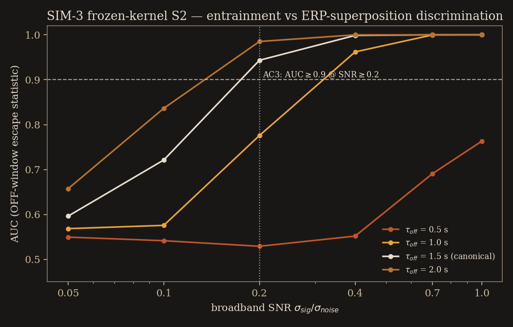
SIM-3 · Exhibit S-I — Discrimination vs SNR.AUC of the OFF-window discriminator between H_super and H_ent across the SNR grid: ≥ 0.9 from SNR 0.2 upward; the instrument admits indistinguishability below SNR 0.1 rather than guessing.
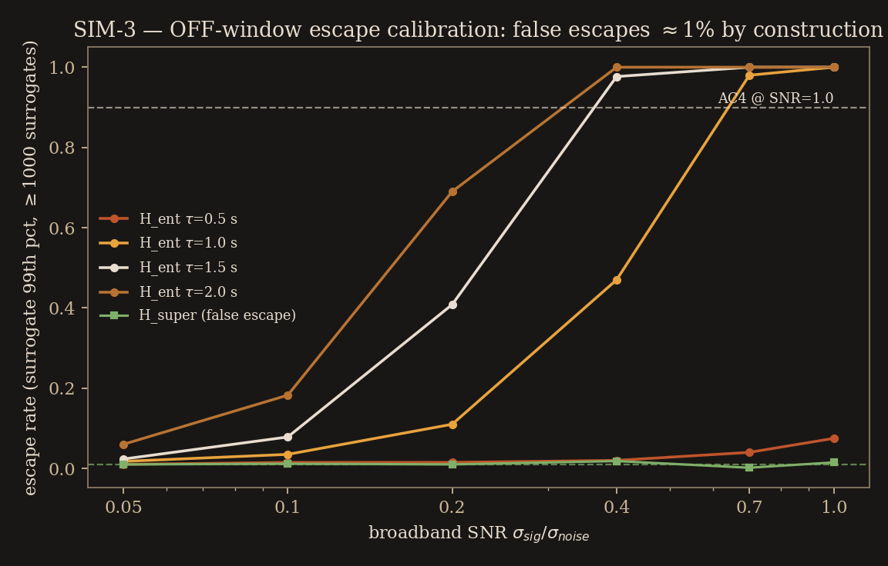
SIM-3 · Exhibit S-II — The Calibrated Escape.Escape thresholds calibrated on ≥ 1,000 phase-randomized surrogates under 1/f noise (raised from 200 after Round 3: a 99th percentile of 200 draws is two datapoints deep); false escapes on H_super print at 1.1%, target ≈ 1%.
sim3 · auc_snr_grid · commit not pinned in JSON · engine: ported
S3-AC3 — observed 0.9325333333333333, target AUC >= 0.9 at SNR >= 0.2, H_super vs H_ent(tau_off=1.5 canonical)PASSS3-AC4 — observed tau1.0=1.0, tau1.5=1.0, tau2.0=1.0, target escape rate >= 0.90 for tau_off in {1,1.5,2} at SNR=1.0PASSS3-AC5 — observed 0.011111111111111112, target false-escape rate on H_super in [0.004, 0.02] (target ~1%)PASS
The instrument says:“PASS: all 3 acceptance criteria met for sim3/auc_snr_grid”
sim3 · family_on_peak · commit not pinned in JSON · engine: ported
S3-AC2 — observed 0.06544187478729525, target family-max ON-window 40Hz peak within 10% of H_ent's peakPASS
The instrument says:“PASS: all 1 acceptance criteria met for sim3/family_on_peak”
Amplitude-matching disclosure (verbatim from metrics.note): amplitude-matched models (S_ENT^2+RHO_OSC=1): AC2 guards the direction 'superposition family under-produces the ON peak'; an unmatched variant would violate the 10% band by construction of the oscillator share and is not scientifically interesting (ON peak would itself discriminate, bypassing OFF persistence). Family-max member: none_m1.0 (0.4250226349251937) vs H_ent base (0.39891677339042564).
Kill criterion — always visibleIf synthetic true-entrainment is indistinguishable from the superposition family at feasible SNR, X02 and B4’s endpoint logic retire together.
Convincing power: yes — the cleanest falsifier, because its target is the repo’s own authors; a falsifier must name who updates
The crop-circle-pattern-lab decodes formation geometry into frequencies and tabulates “difference tones” between formations that fall near just-intonation intervals. S3 asks the only honest question: how often would any such table, drawn from the decoder’s own output distribution, produce as many near-JI pairs? One hundred thousand decoder-matched Monte-Carlo draws, the preregistered 5¢ window against the frozen JI-13 table, verdict emitted by machine rule. The repo’s table shows 3 hits; the null’s 99th percentile is 13. The instrument says: chance-consistent, p = 0.8371 (95% Wilson [0.8348, 0.8394]). The sensitivity rows at 3¢ and 10¢ windows are labeled non-inferential by construction — only the preregistered cell was allowed to carry a verdict. The table is re-labeled accordingly; the null is displayed, not buried (ruling 5).
Preregistration — six-part block
Hypothesis
Decoded formation-frequency pairs cluster on just-intonation intervals beyond the decoder-matched null.
Endpoint + threshold
Count of pairs within 5¢ of the frozen JI-13 table; survives only above the null 99th percentile of 100,000 decoder-matched draws; p with +1 correction, MC half-width ≤ .002.
Null
Decoder-matched random draws reproduce the hit count.
Blinding
Decoder posterior, JI-13 table, and input CSVs hash-frozen at commit (SHA-256 recorded in the JSON); verdict rule coded before the count is read.
Analysis pointer
/sim/s6_difftone_null.py; frozen inputs pinned by hash.
Kill
Count inside the null distribution → the table is re-labeled “chance-consistent.” Executed: that is what happened.
SIM-6 · Exhibit S-III — The Null and the Observation.Histogram of hit counts across 100,000 decoder-matched draws (mean 4.997, 99th percentile 13). The observed table — k = 3 — sits deep inside the null. Verdict string emitted by machine rule: “chance-consistent (p = 0.8371).”
sim6_difftone_null · difftone_null_v1 · commit not pinned in JSON
SIM6-AC1 — observed n_draws=100000, decoder_matched=true, target null from exactly 100000 seeded decoder-matched draws (histogram committed in metrics.null.histogram)PASSSIM6-AC2 — observed p=0.8371116288837112, mc_se_1sigma=0.0011677146469552013, wilson95=[2 rows], target p computed with +1 correction and MC precision; 1-sigma MC half-width <= 0.002 (95% Wilson CI also reported)PASSSIM6-AC3 — observed p=0.8371116288837112, verdict=chance-consistent, k_obs=3, null_q99=13.0, target verdict label emitted by machine rule: "chance-consistent" iff p > 0.05 (equivalently k_obs <= null q99)PASSSIM6-AC4 — observed all_sensitivity_rows_labeled=true, n_sensitivity_rows=3, target {3,10} cents windows and uniform-frequency null emitted labeled NON-INFERENTIAL; only 5c/JI-13 carries the verdictPASS
The instrument says:“chance-consistent (p=0.8371 [0.8348,0.8394] 95% Wilson, k_obs=3 vs null q99=13, N=100000); acceptance: 4/4 pass”
Observed hits (k_obs = 3): Cheesefoot dumbbell 1990 × Barbury Castle tetrahedron 1991 → major 6th (-1.64¢); Milk Hill Galaxy 2001 × Crabwood disc 2002 → major 2nd (-3.77¢); Barbury pi wheel 2008 × Hackpen 3-D cubes 2012 → tritone (-3.02¢). Repo-table cross-check: 2 hits unfolded in the repo's own 45-pair table.
Convincing power: yes as instrument validation; the causal reading is quarantined
The cymatics decoder turned loose on actual formation photographs, gated on ≥ 80% top-mode recovery on degraded synthetics (Fisher p < 1e-3) before any HIGH-confidence decode ships. Every decoded frequency carries its many-to-one alias set verbatim (ruling 8): “Barbury = 677 Hz” is a similarity statement about a 30 cm drumhead, not a field measurement — the geometry-to-frequency inversion is one direction of a many-valued map, and the pipeline says so on every output. Behind the decoder stands SIM-5, the forward renderer: math-exact Chladni cymatics from the plate equation itself (circular Bessel modes, square cos/superposition forms), validated below, supplying the template library that S4’s validation and B1’s ranking consume.
Preregistration — six-part block
Hypothesis
The decoder recovers true modes from real and degraded imagery well enough to serve as an instrument.
Endpoint + threshold
≥ 80% top-mode recovery on degraded synthetics; Fisher p < 1e-3; alias set attached to every decoded Hz.
Decoder posterior frozen at commit; validation synthetics generated from the frozen renderer, not the decoder.
Analysis pointer
cymatics/code/decode.py against SIM-5’s validated renderer.
Kill
Gate failure → instrument demoted to symmetry-class labeler; no Hz claims ship.
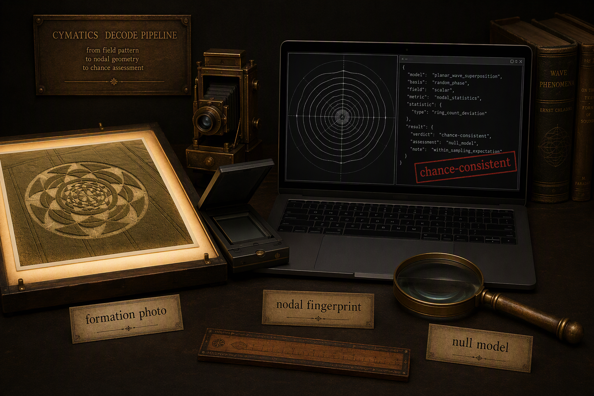
Plate XXXI — The Decode Pipeline (S4/SIM-6).Decode → null, as a diorama: formation photograph, Bessel-mode overlay, and the terminal line that carries the alias set and the machine-stamped verdict. The 677 Hz numeral traces to portfolio §S4; the null stamp to SIM-6’s committed JSON. Dark archival render; numerals burned in only with provenance.
SIM-5 · The math-exact cymatics gallery
The renderer’s salt is a seeded particle simulation drifting down the amplitude gradient of the analytic eigenmode field — pattern determined by boundary conditions and drive spectrum; Hz→pattern is not a determined mapping (honesty note carried in every PNG’s metadata, verified as acceptance criterion SIM5-AC4).
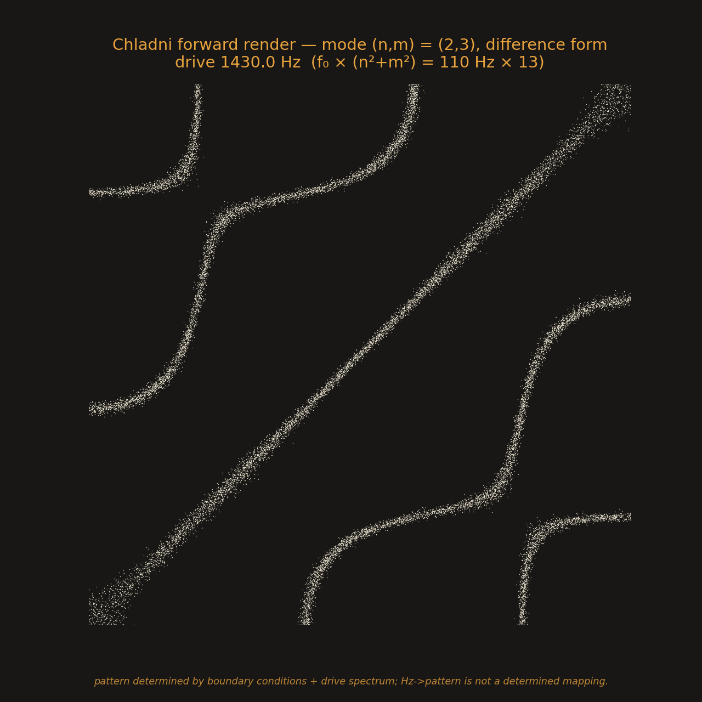
SIM-5 · Square plate (2,3)+Cos-form superposition; band coverage 0.999144 against the analytic zero set.
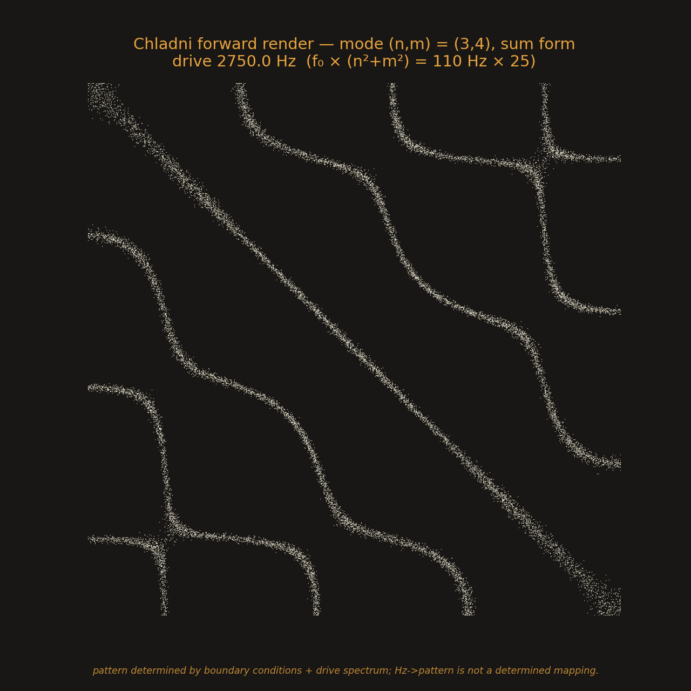
SIM-5 · Square plate (3,4)−Antisymmetric superposition; band coverage 1.0.
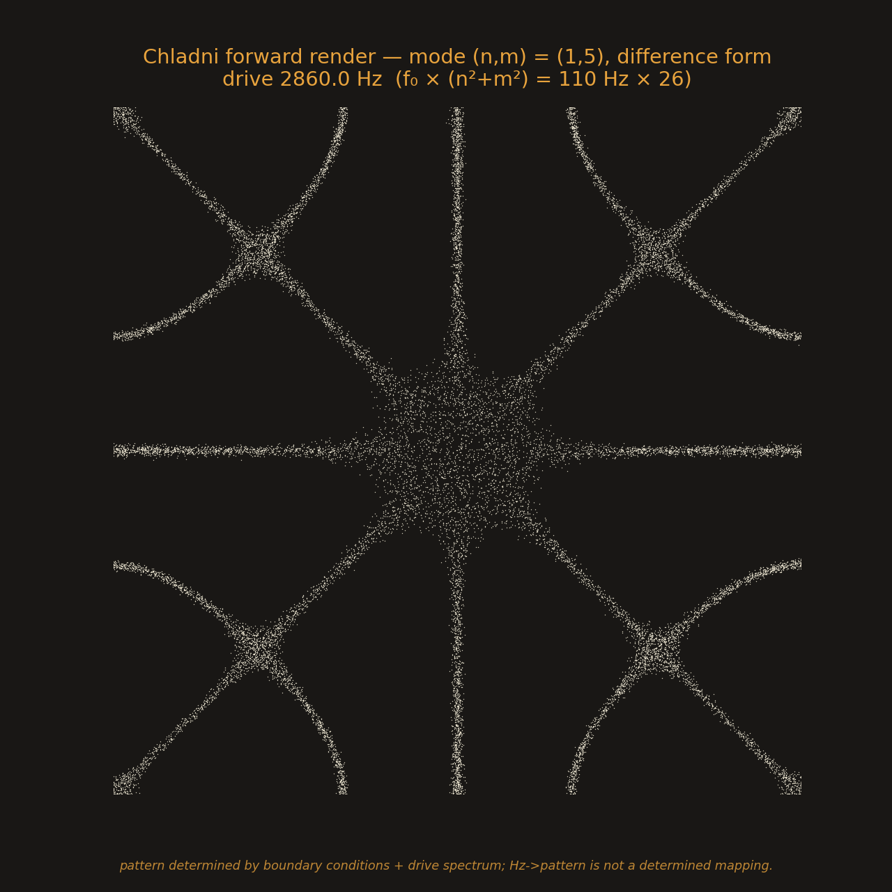
SIM-5 · Square plate (1,5)+Band coverage 0.992913 — the battery’s minimum, still above the frozen 0.90 criterion.
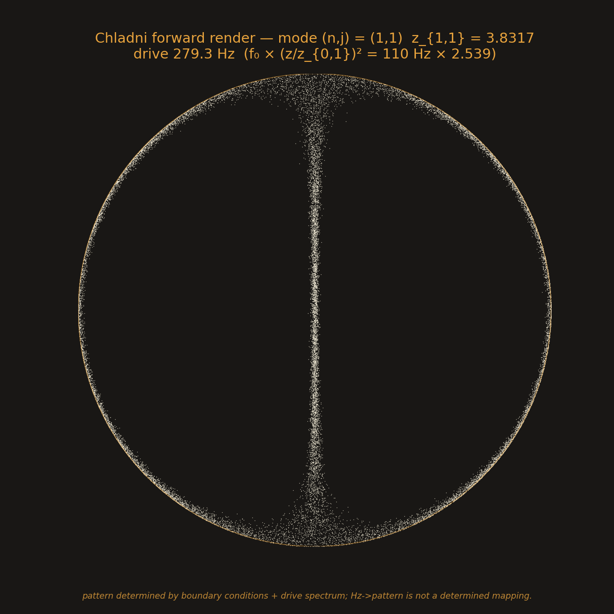
SIM-5 · Circular plate n=1, j=1Bessel J₁ mode; nodal radii match analytic zeros to 1.7e-8 relative error; coverage 0.99494.
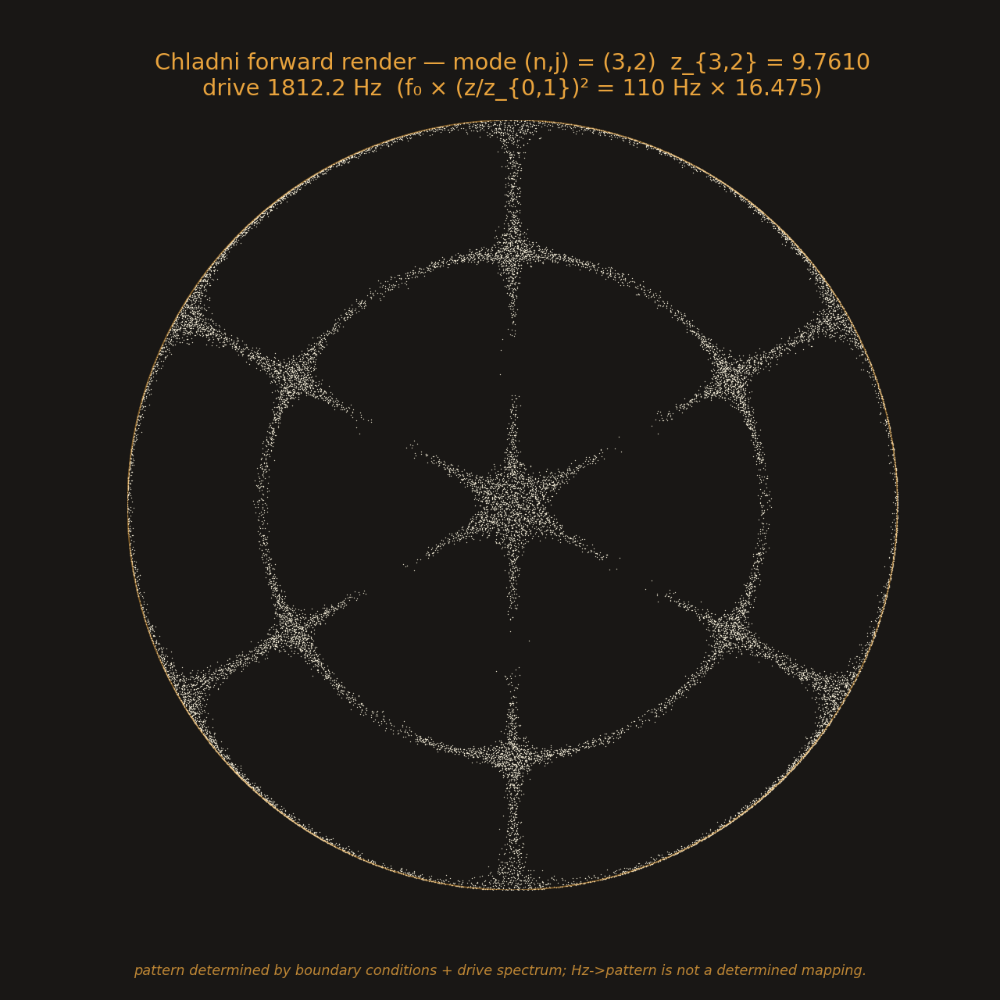
SIM-5 · Circular plate n=3, j=2Band coverage 1.0.
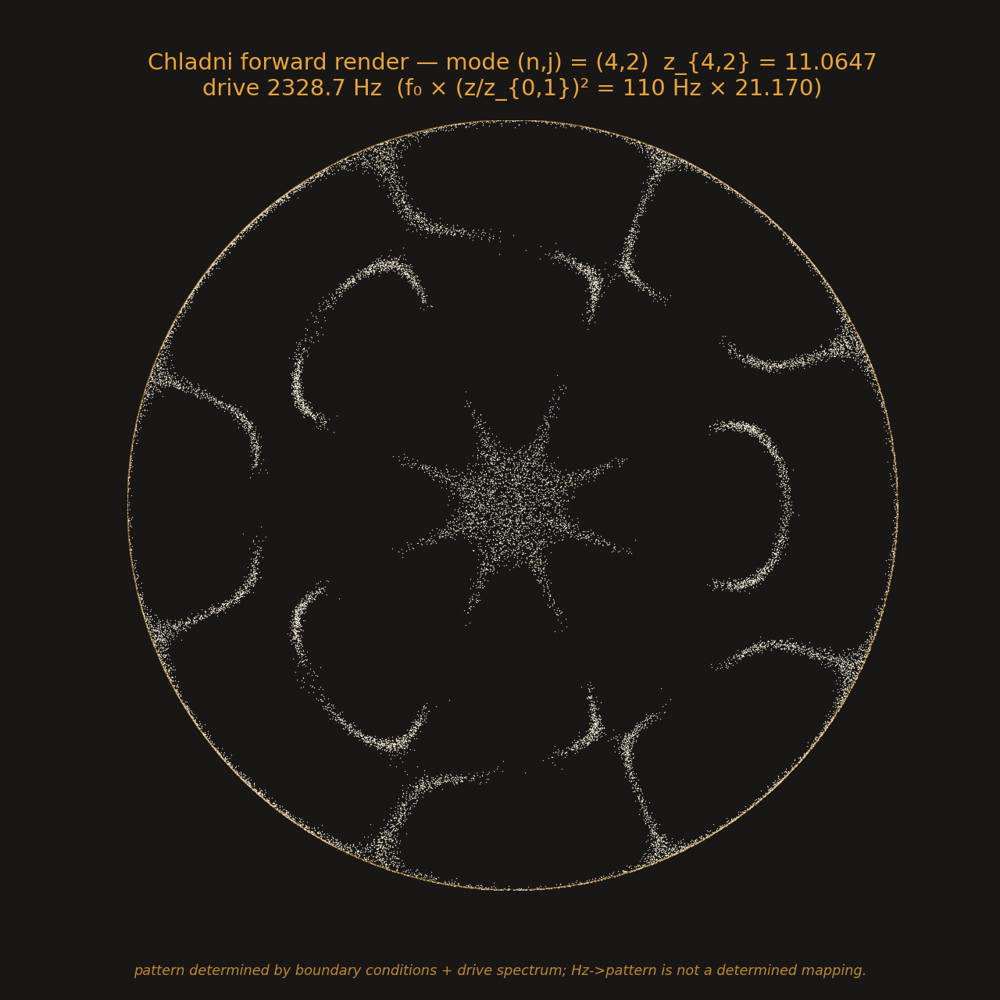
SIM-5 · Circular plate n=4, j=2Band coverage 1.0.
sim5_chladni · chladni_acceptance_v1 · commit not pinned in JSON
SIM5-AC1 — circular nodal-circle radii (pure eigenmode field) match analytic z_{n,j}/z_{n,last} to <1 — observed max_rel_err=1.7096801532689005e-08, all_count_matched=true, target see criterionPASSSIM5-AC2 — square edge nodal-crossing positions match analytic zero set to <1% of plate width, count- — observed max_abs_dev_frac=2.6362826421877372e-08, all_count_matched=true, target see criterionPASSSIM5-AC3 — band coverage >= 0.90 in every salt pattern (band half-width 3.00% of plate width, density — observed min_coverage=0.9929131321808226; per-pattern range 0.992913–1.0 across the 10-pattern salt battery, target see criterionPASSSIM5-AC4 — honesty note present in every figure PNG metadata block and in this result JSON (verified — observed honesty note verified in 6 figure PNG metadata blocks and in this JSON, target see criterionPASS
The instrument says:“all acceptance criteria pass (4/4)”
Honesty note carried in every render: “pattern determined by boundary conditions + drive spectrum; Hz->pattern is not a determined mapping.”
Convincing power: infrastructure — no community updates claimed
The shared statistics kit: permutation engines, max-over-k nulls (the Jung lesson made portfolio law), BH-FDR within declared families, and phase-randomized surrogates. Its calibration test is unchanged and unforgiving: reproduce the archive’s Jung-page max-over-50 numbers exactly or be rejected. Its first production use was R1’s exact permutation inside SIM-2 — including the block-preserving variant whose exchangeability justification is written into the result file.
Preregistration — six-part block
Hypothesis
A single audited statistics kit can serve every portfolio entry’s null construction.
Endpoint + threshold
Calibration: reproduce the Jung-page max-over-k numbers exactly; Type-I of each null verified on synthetic data before first use.
Null
Calibration mismatch → kit rejected, not patched silently.
Blinding
N/A — infrastructure; every null frozen before the data it will judge.
Analysis pointer
/sim/nullkit.py; first use: SIM-2 permutation repair.
Kill
Any calibration miss against the reference numbers → the kit is rejected and every dependent result is quarantined.
Kill criterion — always visibleFail to reproduce the reference calibration numbers exactly → the kit is rejected and its dependents quarantined.
The lab is where claims meet people, and parchment signals daylight scrutiny. Every entry below waits at stimulus construction behind the Part-0 gate (G1); every one carries hash-committed blinding with a post-session guess-the-arm check (G2) — guesses above chance at p < .05 quarantine the result as “blinding compromised” regardless of endpoint.
A1
The Beat-Perceptibility Map
Frontierheadphones · weeks of blocks
Convincing power: partial — the sober core updates on psychophysics; the testimonial majority does not
Before any beat-efficacy claim, the lab maps the percept itself: can a listener hear a 10 Hz amplitude beat inside a carrier — and can they not hear it at 40–45 Hz, where the entrainment industry’s “gamma” products live? Two-interval forced choice under hash-committed blinding, catch trials, guess-the-arm after every block; the self-revealing above-ceiling arm’s guesses serve as control calibration.
Preregistration — six-part block
Hypothesis
d′ > 1 inside the Oster/Licklider window; d′ ≈ 0 at 40–45 Hz.
Endpoint + threshold
75% Weibull thresholds per carrier; sham-arm d′ CI covering 0.
Null
Thresholds indistinguishable from sham outside the window → percept-gating dies.
Blinding
Hash-committed arm key; catch trials; guess-the-arm per block against chance (exact binomial).
Analysis pointer
/sim/a1_psychometric.py; 4 Weibulls = one family, FDR; threshold–benefit correlation is a separate preregistered secondary.
Kill
d′ < 1 at Δf = 10–20 Hz → all downstream beat-efficacy entries suspend.
Plate XXVII — The Listening Station (A1).Closed-back headphones, an anonymized 2AFC interface labeled only “1” and “2”, and the sealed hash-committed arm key. Blinding is measured, not asserted: every block ends with guess-the-arm and confidence.
Kill criterion — always visibled′ < 1 at Δf = 10–20 Hz → all downstream beat-efficacy entries suspend.
Convincing power: no as falsification (the claim is elastic), yes as pedagogy — the slot is justified on the second rating
An equivalence test, not a superiority hunt: is any retuned version distinguishable in effect from 440 beyond ±d = 0.2? The honest arithmetic from the gate forced the SESOI widened to d = 0.5 at feasible n — preregistered, pre-data — while the ±0.2 equivalence bound for the discard claim is kept. Null = success: equivalence discards the Cousto/432 physiological claims per the kill matrix.
Preregistration — six-part block
Hypothesis
Equivalence: 90% CI of every retune contrast ⊂ ±d = 0.2 (TOST).
Endpoint + threshold
Primary contrast 432 vs 440 on the calm/focus composite; 6 contrasts + HR = one declared family, FDR.
Null
Equivalence — which here is the success that discards the claims.
Blinding
Hash-commit + guess-the-arm; relative pitch splits 415 vs 528 — measured, not asserted.
Analysis pointer
Per G1/R2 arithmetic: d = 0.35 SESOI needs ~126 sessions/arm-pair; SESOI preregistered-widened to d = 0.5 at feasible n.
Kill
Equivalence at the ±0.2 bound → Cousto/432 physiological claims DISCARDED. (Reverse edge: superiority at d ≥ 0.5 surviving FDR and the A1 gate → claims promoted one grade, replication before publication.)
Kill criterion — always visibleEquivalence within ±d = 0.2 → the 432/528 physiological claims are discarded per the kill matrix. A preregistered null-with-consequences; the temptation to bury it is removed structurally.
Convincing power: no/no for belief, yes for the undecided public — retained explicitly as pedagogy
Salt on a center-clamped steel plate: the grains migrate to the nodal lines of whichever eigenmode the driver excites. Re-mount the plate and the “sacred” frequency moves — the geometry lives in the boundary conditions, not the cosmos. Re-graded honestly in Round 2: decisive against a marketing meme, inert against the elastic belief; its products are the measured mode ladder, the pattern library feeding S4 and B3’s foils, and null-publication exhibit two.
Preregistration — six-part block
Hypothesis
432 Hz is not special on this plate: every frequency yields a clean figure at a resonance and none between.
Endpoint + threshold
≥ 3 clean resonances in 400–460 Hz; nearest-mode distances to 432/440 arbitrary; re-mount moves the “sacred” frequency.
Null
432 ordered where neighbors are chaotic on the same plate — predicted impossible.
Blinding
Rater-blind beauty scoring of unlabeled patterns — itself a guess-the-arm check.
Analysis pointer
/sim/a3_rings.py; alias-set disclaimers attach to any Hz decoded from its images (ruling 8).
Kill
None needed at $20 — a failed demo is still the pedagogy.
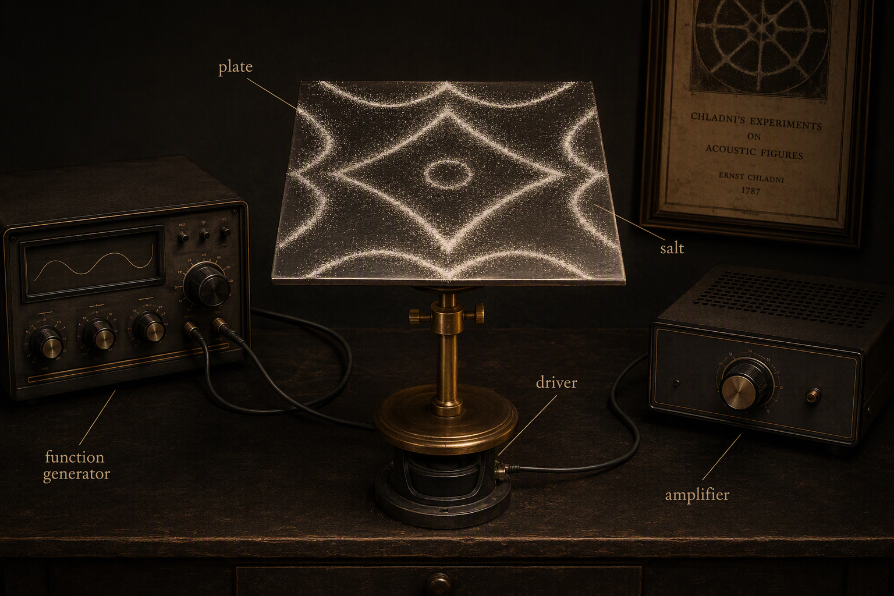
Plate XXVIII — The Chladni Rig (A3).Center-clamped square plate, salt on the nodal lines, signal generator at 432 Hz (numeral provenance: portfolio §A3 endpoint band 400–460 Hz — chosen because the meme claims it, not because the plate prefers it). Re-mounting the plate moves the “sacred” frequency.
Kill criterion — always visibleNone — at $20 a failed demo is still the pedagogy. The only dishonest outcome would be hiding one.
Convincing power: yes — the lucid-dreaming community is protocolized and respects Carr-style designs; a properly powered home null would update their wiki
Targeted lucidity reactivation by a bedside tone, tested at home under a sealed scheduler. The v1 plan demanded a Carr-scale effect at a fraction of Carr’s precision; the harness correction is now the design: baseline lucidity 15%, detecting +20 pp with ten nights per arm yields power = .14 — and 80% power needs ≈70 nights per arm. The fixed plan was replaced by a Bayesian sequential harness with bounds copied verbatim from SIM-4 into the prereg: promote at BF ≥ 10, kill at BF ≤ 1/6, cap 140 nights. The sequential instrument reports P(promote | null) = 0.041 against its ≤ .05 bound, P(kill | real effect) = 0.009 against ≤ .20, and prints its headline honestly: probability of reaching the cap undecided — 0.088 under the effect, 0.116 under the null, 0.396 at half-effect. Attrition moves the error rates by less than half a percentage point.
Plate XXIX — The Bedside Rig (A4).Sealed cue timer (“window: late/sham — sealed”), sleep headphones, journal, and the morning checklist that doubles as the blinding-integrity probe. The 140-night sequential design survives missed nights by construction.
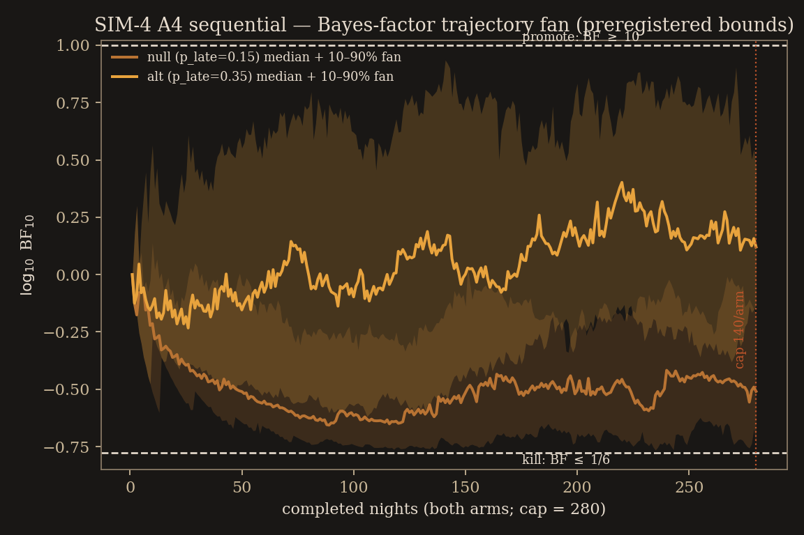
SIM-4 · Exhibit A-I — The Trajectory Fan.Bayes-factor trajectories under the three worlds (null / half-effect / Carr-scale), bounded above at BF 10 (promote) and below at 1/6 (kill), capped at 140 nights. The undecided mass at the cap is the headline metric, printed — not buried.SIM-4 · Exhibit A-II — When the Instrument Decides.Stopping-night distributions: most worlds resolve far before the cap; what remains at night 140 is reported as P(undecided) per world — 0.088 / 0.116 / 0.396.
sim4 · fixed_n_calibration · commit not pinned in JSON · engine: ported
S4-AC1a — observed closed_form=69.65880764234817, n_star=71, exact_power_n70=0.7968886940146632, target closed-form rounds to 70/arm; exact n* within discreteness (70-71); exact power(70) within .01 of .80PASSS4-AC1b — observed sim=0.13845, exact=0.1373243286300217, target |sim - exact| <= .01 at n=10 AND exact ~= .14 +/- .01PASSS4-AC1c — observed sim=0.7977, exact=0.7968886940146632, target |sim - exact| <= .01 at n=70 (80% power point)PASS
The instrument says:“PASS: all 3 acceptance criteria met for sim4/fixed_n_calibration”
Kill criterion — always visibleEquivalence within ±10 pp at full enrollment → blind-timer home TLR falsified; lab cueing may survive, and said so in advance.
The dismantling test for relaxation tracks: breath-pacing alone, beat alone, both. If breath-only is equivalent to both while beat-only falls below, the beat mechanism is discarded for relaxation use — the paced-breath audio is self-revealing, so blinding is measured by guess-the-arm, not asserted.
Preregistration — six-part block
Hypothesis
Breath-only ≈ both > beat-only — the beat is inert.
Endpoint + threshold
Breath-only vs beat-only on the calm composite; TOST ±d = 0.2 closes breath-only ≈ both.
Null
Beat-only exceeds breath-only beyond the bound → the beat survives.
Blinding
Hash-commit + guess-the-arm (paced-breath audio is self-revealing; guesses measured).
Analysis pointer
3 contrasts = one family, FDR; per G1/R2 either ~63 sessions/arm at widened SESOI d = 0.5 or a 4-month enrollment at d = 0.35.
Kill
Equivalence of breath-only ≈ both with beat-only below → beat mechanism discarded for relaxation tracks.
Kill criterion — always visibleBreath-only ≈ both, beat-only below → the beat mechanism is discarded for relaxation tracks.
Convincing power: partial — a threshold-resolved, dose-documented result moves the methods-literate fortean reader; believers do not update on anyone’s null
Tandy’s fan and Wiseman’s organ, done with a measurement chain: session 0 is a per-subject 18 Hz threshold staircase; the stimulus sits ≥ 10 dB above measured threshold (sub-threshold runs are labeled the different experiment they are); phone MEMS microphones are excluded by design; harmonics at 36/54 Hz are measured at the seat each session and the stimulus is rejected unless they sit ≥ 20 dB below the fundamental. Endpoint: ≥ 15 pp excess odd-sensation endorsement vs powered-muted sham, exact binomial, ≥ 24 paired exposures.
Preregistration — six-part block
Hypothesis
Above-threshold 18 Hz exposure elevates odd-sensation endorsement vs sham.
Endpoint + threshold
≥ 15 pp excess endorsement, exact binomial, ≥ 24 paired exposures; every session dose-logged (SPL-at-ear vs the subject’s threshold, G4).
Null
Equivalence within ±10 pp → home-scale null, published (ruling 5).
Blinding
Powered-muted sham; harmonic levels reported as dose record and guess-the-arm covariate.
Analysis pointer
Exact binomial on paired exposures; threshold staircase 2-down-1-up on a calibrated chain.
Kill
Equivalence at full n → claim demoted for home-scale reproductions.
Safety & Dose Disclosure — A6
The A-weighting correction, acknowledged in Round 2: 90 dB SPL at 18 Hz ≈ 40 dBA — trivially safe (ACGIH tolerates ~145 dB in 1/3-octave bands across 1–80 Hz). The earlier limits were over-conservative for the wrong reason; the real defects were threshold ignorance, uncalibrated measurement, and unmeasured harmonics — all three redesigned.
Stop rules retained; written consent documented (ruling 6); subjects whose 18 Hz threshold exceeds the 90 dB cap are excluded. Every session’s dose is logged and published with the result.
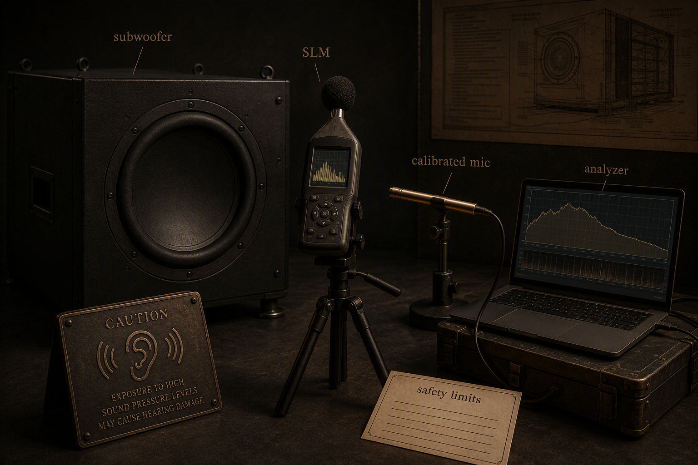
Plate XXX — The Infrasound Rig (A6).Subwoofer on isolation pads, Class-1 SLM reading 90.0 dB SPL · 18 Hz (≈ 40 dBA — dose arithmetic per portfolio §A6), calibrated microphone at ear height, oscilloscope trace, consent form. Dose-logged, threshold-referenced, harmonics ≥ 20 dB down.
Kill criterion — always visibleEquivalence within ±10 pp at full n → the “dread frequency” claim is demoted for home-scale reproductions, and the null is published.
Convincing power: no/no — retained solely as pedagogy, as the Advisor’s condition permits
The pretense is dropped: its binomial endpoint never tested water (Radin 2006 did, triple-blind). A7 is now a teaching demonstration of why blinding is hard — the endpoint is the leak census itself: freezer position, photo order, crystallization timing, rater drift, enumerated, severity-rated, published. It does not certify the sealed-label machinery; a leak-rich pipeline can only exhibit leaks. G2’s hash-commit is what certifies Tier A/B, and A7 is the exhibit of what happens without it.
Preregistration — six-part block
Hypothesis
A deliberately leak-rich crystallization pipeline will exhibit enumerable, severity-ratable blinding leaks.
Endpoint + threshold
The census: channels enumerated and severity-rated; no water-claim endpoint exists.
Null
No detectable leaks — itself a finding about the census’s sensitivity.
Blinding
Deliberately imperfect — that is the lesson; contrast with G2 hash-commit elsewhere.
Analysis pointer
Descriptive census; no inferential claim.
Kill
None; one weekend, then a permanent teaching artifact.
Kill criterion — always visibleNone — the leak census is the deliverable. Its null (“no leaks found”) would be a finding about the census, not about water.
Last because least binding: calibrations and closures that sharpen the instruments or close the record, none of which alone would convince a community.
B1
Forward-Render vs Alias Chamfer Ranking
Infrastructure$0 compute
Convincing power: no — justified as decoder-instrument calibration
Can the decoder rank its own forward render above nine alias renders for the true formation? Endpoint frozen: true decode first in ≥ 7/10 formations with ≥ 20% median margin; ten formations = one family, FDR; alias sets reported verbatim with every output (ruling 8).
Preregistration — six-part block
Hypothesis
Chamfer distance to the true decode’s forward render is smallest among its alias set.
Endpoint + threshold
True decode ranked first ≥ 7/10; ≥ 20% median margin; one family, FDR.
Null
Margin fails → decoder demoted to symmetry-class labeler.
Blinding
Renderer and decoder frozen at commit; aliases drawn from the frozen posterior.
Convincing power: no — order-of-magnitude physics convinces no plasma-vortex holder; retained as closure-by-measurement for the record
Does a canopy of wheat disperse and attenuate airborne sound fast enough to matter for any acoustic-formation hypothesis? An order-of-magnitude bound, stated as such in the output itself.
Preregistration — six-part block
Hypothesis
Canopy acoustics exclude the acoustic-formation mechanism quantitatively.
Endpoint + threshold
Decay length vs wavelength across frequency; order-of-magnitude status stated in the output.
Null
Overdamped decay ≪ λ at all frequencies → acoustic mechanism quantitatively excluded.
Blinding
N/A — physics estimate.
Analysis pointer
Standard acoustic-suspension attenuation models.
Kill
Overdamped decay ≪ λ everywhere → the acoustic mechanism is excluded, on the record.
Kill criterion — always visibleOverdamped decay ≪ λ at all frequencies → acoustic mechanism quantitatively excluded. A preregistered null-with-consequences.
Convincing power: partial — a clean label-effect result is social psychology skeptics will cite; the believers’ claims are elastic
“Seeing sound reveals its signature,” tested: can raters match cymatics patterns to the sounds that made them — and does labeling the pattern with its frequency change aesthetic judgment? Hash-committed label crossing; raters guess the label condition after every block.
Preregistration — six-part block
Hypothesis
Raters match patterns to frequencies above chance, and labels shift aesthetic ratings.
Endpoint + threshold
Matching ≤ 30% (CI vs 25% chance) → frequency-signature falsified; label effect equivalence-tested at ±d = 0.2; accuracy > 40% triggers a cue-leak audit before belief revision.
Convincing power: yes, as feasibility only — ruling 7 binds what a positive may mean
Can a consumer EEG headset resolve a 40 Hz auditory steady-state response above phase-randomized surrogates at all? Ruling 7 is printed on the card: a positive licenses exactly one inference — this headset, this head, resolves 40 Hz ASSR above surrogates — and buys permission to purchase better hardware, nothing else. Jaw-clench EMG control mandatory even for the feasibility read.
Preregistration — six-part block
Hypothesis
A consumer headset resolves 40 Hz ASSR above the surrogate 99th percentile.
Endpoint + threshold
≥ 8/10 sessions above the surrogate 99th percentile, jaw-clench EMG control mandatory.
Null
Fewer than 8/10 → consumer-EEG entrainment deferred.
Blinding
N/A for the feasibility read; surrogate null frozen in advance.
Analysis pointer
Surrogate construction from S5 Nullkit; S2 remains the state of knowledge on mechanism.
The laboratory’s wall hangs the corrected chemistry of Folio II. Every equation below was re-balanced in Round 4 and re-checked against the manuscripts in Round 5; the table header says plainly what the mapping is — a modern chemical gloss of a documented color sequence and bench tradition, not a claim that Newton owned a phase diagram.
#
Alchemical cover-name
Newton-era source
Actual chemistry (modern equation)
Phase / structure note
1
Star Regulus of Mars (regulus antimonii stellatus)
Sb crystallizes rhombohedral (A7); the star is the facet pattern of large columnar crystals under slow, slag-capped directional solidification; FeS floats to the slag.
2
Net of Vulcan (rete Vulcani)
Add. MS 3975 f.43r / f.54v
Cu + Sb (from martial regulus) → Cu₂Sb / Cu₃Sb intermetallic surface layer; solidification, no net reaction beyond alloying
Cu dissolves ≤ ~5 at.% Sb; primary dendrites outlined by the last eutectic liquid → the reticulated mesh; central depression = solidification pipe cavity; purple hue = thin intermetallic patina film.
3
Sophick Mercury — Newton’s amalgam tree
Newton’s copy of Starkey’s Praeparatio (1670–78)
Au + Hg → Au–Hg amalgam; supersaturation → dendritic precipitation (diffusion-limited aggregation, 2D ≈ 1.7). Kept separate: the classic Arbor Dianae is a different demonstration — 2 AgNO₃ + Hg → 2 Ag↓ + Hg(NO₃)₂ (Principe 2018)
Gold dissolves in mercury only to ~0.1 at.% at room temperature — supersaturation beyond it is exactly why the dendrites precipitate. The gravimetric protocol was an attempted null mass balance.
4
Green Lion (leo viridis) — the menstruum family Speculative
Newton’s concordance (Westfall)
Devouring-solvent theme: aqua fortis / spirit of salt lineage. The theme’s modern chemistry, not the Lion’s identity: Au + 3 HNO₃ + 4 HCl → HAuCl₄ + 3 NO₂↑ + 3 H₂O; on silver: 3 Ag + 4 HNO₃ → 3 AgNO₃ + NO↑ + 2 H₂O
Referent explicitly uncertified, consistent with Folio II. A speciation event, not a phase: Au(0) → [AuCl₄]⁻ in solution; the orange NO₂ plume is the “lion’s breath.”
Oxidation-state and band-gap changes drive the color: narrow-gap sulfide blacks, wide-gap oxide whites, hydrated-oxide yellows, charge-transfer reds. Color was spectroscopy before spectroscopes.
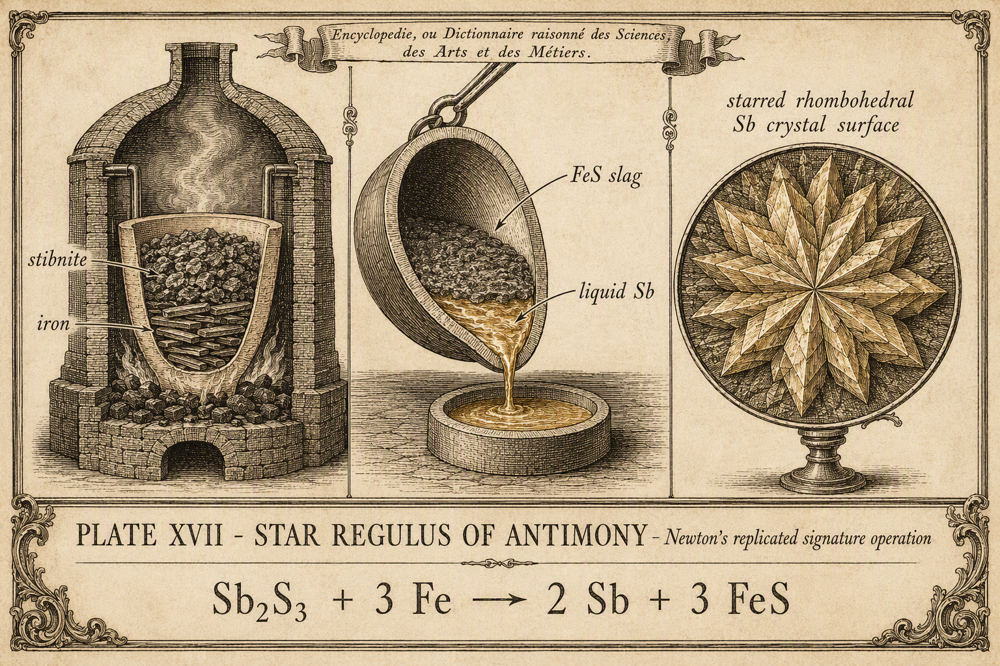
Plate XVII — Regulus Antimonii Stellatus, the diagram.Three registers: the charged crucible (Sb₂S₃ + Fe + KNO₃, ~900 °C), the pour under its FeS slag cap, and the starred button — rhombohedral Sb (A7), columnar facets. Banner equation as corrected in Round 4: Sb₂S₃ + 3 Fe → 2 Sb + 3 FeS; the saltpeter duty 2 KNO₃ + 2 S → K₂SO₄ + SO₂ + N₂.Plate XVIII — Regulus Antimonii Stellatus, the specimen.The starred button as Newton made it repeatedly in the 1680s, replicated for the modern bench by Newman and Principe: a quality-control indicator readable off a phase diagram, five centuries of aura notwithstanding.
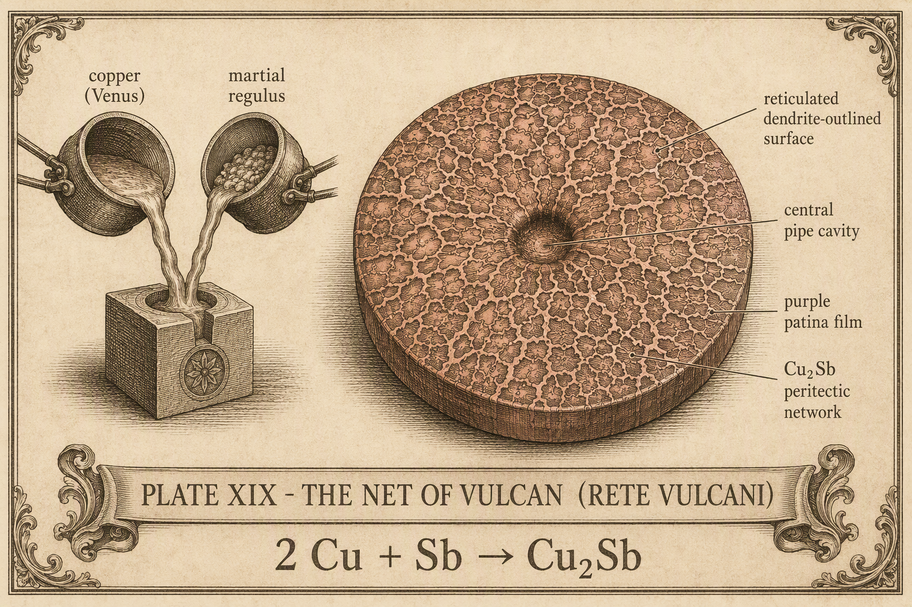
Plate XIX — Rete Vulcani, the diagram.The Cu–Sb diagram with its intermetallic region, and the ingot’s net: primary dendrites outlined by the last eutectic liquid, the central depression a solidification pipe cavity. Ovid’s myth decoded into a foundry recipe whose success criterion is a microstructure.
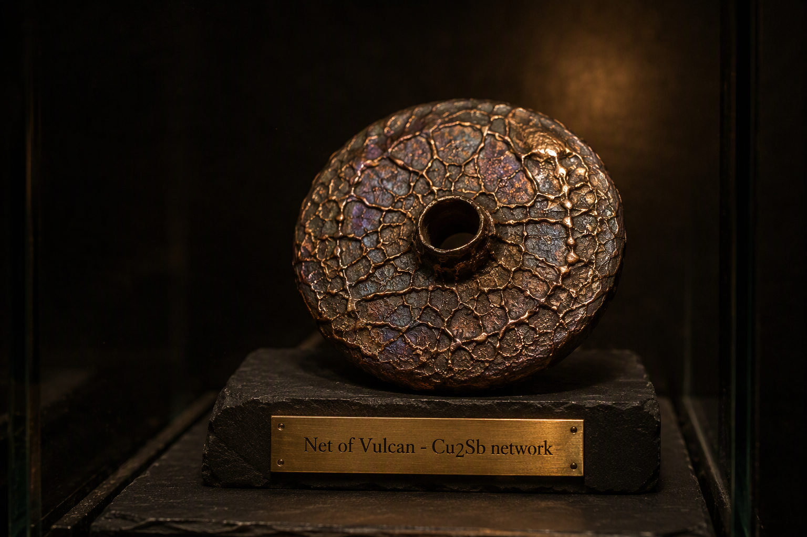
Plate XX — Rete Vulcani, the specimen.Cu₂Sb/Cu₃Sb intermetallic surface; the purple is a thin interference patina, the mesh a shrinkage-and-eutectic texture — a frozen net, literal and metallurgical.
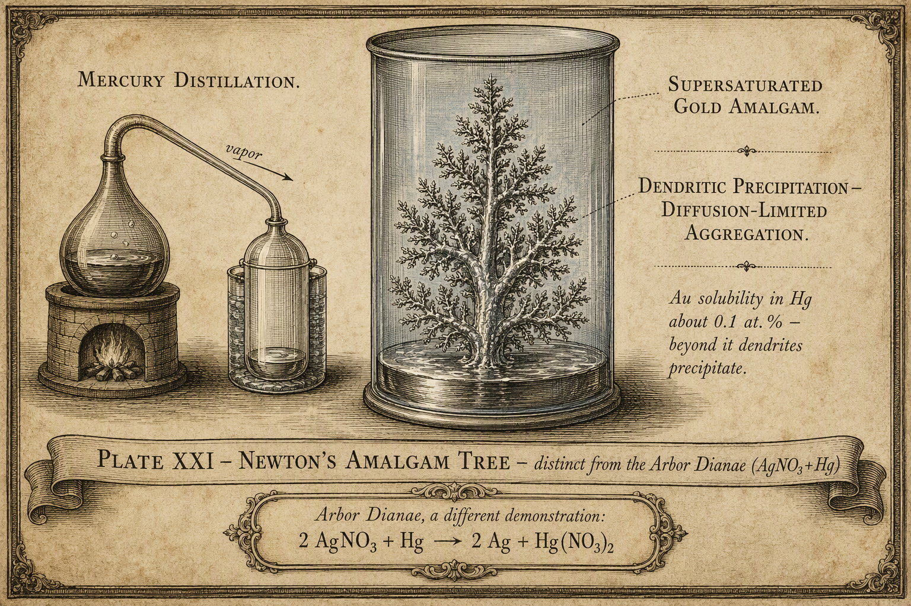
Plate XXI — The Amalgam Tree, the diagram.Distillation (Hg, b.p. 356.7 °C), the tree, the balance. Newton’s tree is dendrite precipitation from supersaturated Au/Ag amalgam — gold holds in mercury only to ~0.1 at.% at room temperature, and exceeding it is why the dendrites grow (diffusion-limited aggregation, 2D ≈ 1.7). Arbor Dianae — 2 AgNO₃ + Hg → 2 Ag↓ + Hg(NO₃)₂ — is a different demonstration, kept separate since Round 4.
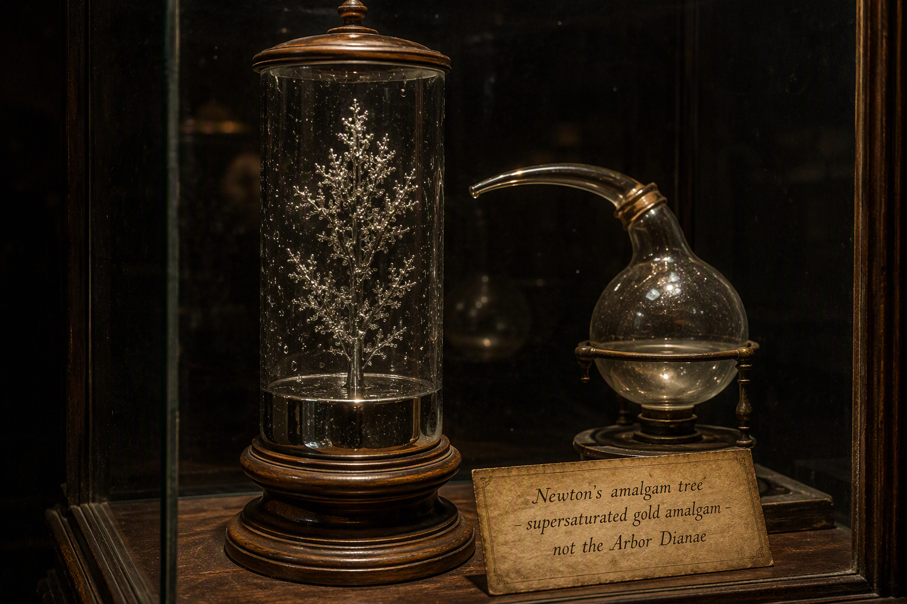
Plate XXII — The Amalgam Tree, the specimen.A documented failure, 1670–78: Newton tracked the gravimetric protocol — the mercury should gain “fermental virtue,” not weight — and the notebook records the null. A falsified hypothesis preserved in manuscript: scientific content of the first rank.
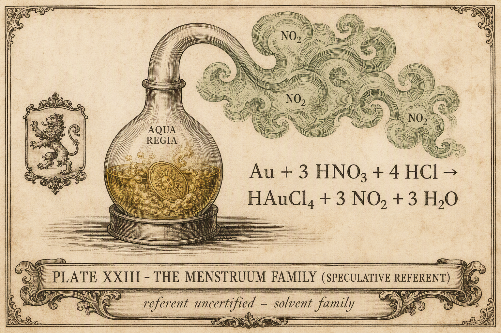
Plate XXIII — Leo Viridis, the diagram. SpeculativeThe Green Lion as the menstruum family — the devouring-solvent theme of aqua fortis and spirit of salt; its referent is explicitly uncertified. The equation on the banner is the theme’s modern chemistry, not the Lion’s identity: Au + 3 HNO₃ + 4 HCl → HAuCl₄ + 3 NO₂↑ + 3 H₂O. The fuming NO₂ plume is the lion’s breath.Plate XXIV — Leo Viridis, the vessel.A speciation event wearing a heraldic costume: Au(0) becomes [AuCl₄]⁻ in solution — dissolution kinetics governed by chloride complexation, not by any living principle. Grade: Speculative, consistent with Folio II.
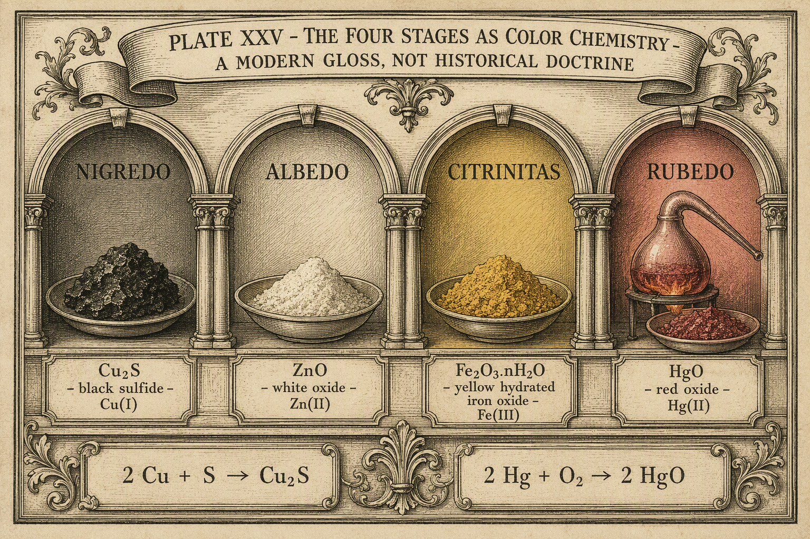
Plate XXV — The Color Cycle, the diagram.A modern chemical gloss of a documented sequence. Nigredo: Cu₂S / Ag₂S narrow-gap blacks. Albedo: ZnO and washed salts, wide-gap whites. Citrinitas: Fe₂O₃·nH₂O yellow (orpiment, As₂S₃, is the period pigment — arsenic hazard; SbOCl was dropped, it is white). Rubedo: 2 Hg + O₂ → 2 HgO, and Cu₂O, charge-transfer reds.
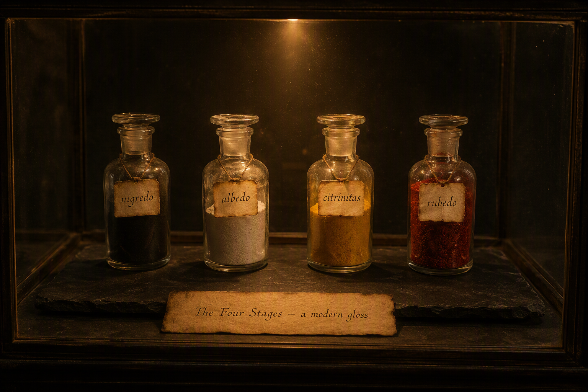
Plate XXVI — The Color Cycle, the specimens.Oxidation state and band gap as palette: sulfide blacks, oxide whites, hydrated-oxide yellow, the mercury and copper reds. The bench tradition read a spectrometer’s worth of information off a color — color was spectroscopy before spectroscopes.
The seed statement, verbatim from the roadmap: every figure rerunnable from seed — seed_root 20250922 for SIM-1/2, 20250923 for SIM-3/4, 20250924 for SIM-5/6, child seeds spawned by SeedSequence and logged inside each JSON. Bit-identity via --verify is scoped to pinned python/numpy versions on one machine (python 3.12.12 · numpy 2.2.5 · scipy 1.16.2, as recorded in the result files).
The docs tree
lab/sims/README.md — rerun everything; seed discipline; --verify scope
lab/sims/sim1…sim6_README.md — model, acceptance, runtime, result pointer
lab/prereg/S1.md … B4.md — six-part blocks, frozen at commit, G6 countersign log
lab/prereg/CHANGELOG.md — re-grades and SESOI widenings, timestamped
lab/sims/results/*.json — the committed verdicts this page quotes
The honesty rules, visible
No hand-transcribed numbers: every numeric claim on this page quotes a committed result JSON — instrument panels are baked from sims/results/*.json at build time, and the build fails closed on a missing file — or a cited panel document. Every verdict string is machine-emitted. Nulls are displayed beside positives (ruling 5). Grades versioned; re-grades logged publicly.
Statistics first, stimuli second — and every null displayed beside every positive— no numeric claim without a committed JSON or a cited source; no verdict string an editor wrote.
The first principle is that you must not fool yourself — and you are the easiest person to fool.
Richard P. Feynman · Cargo Cult Science · 1974